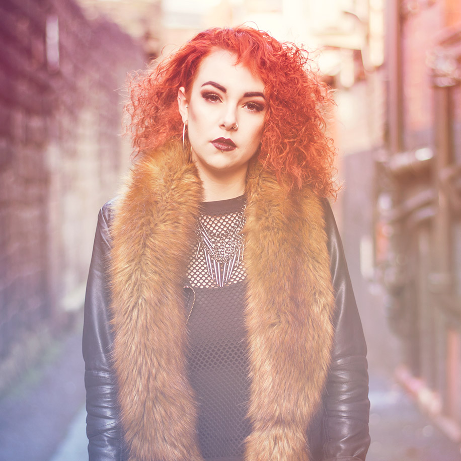
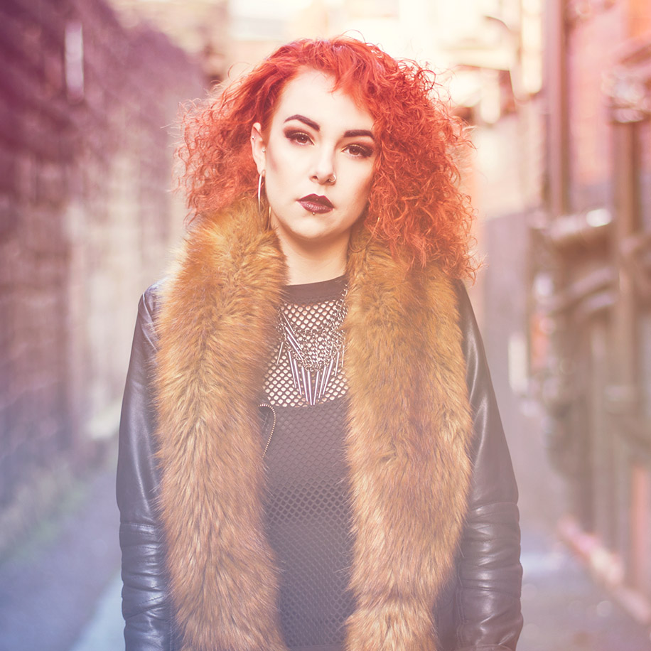
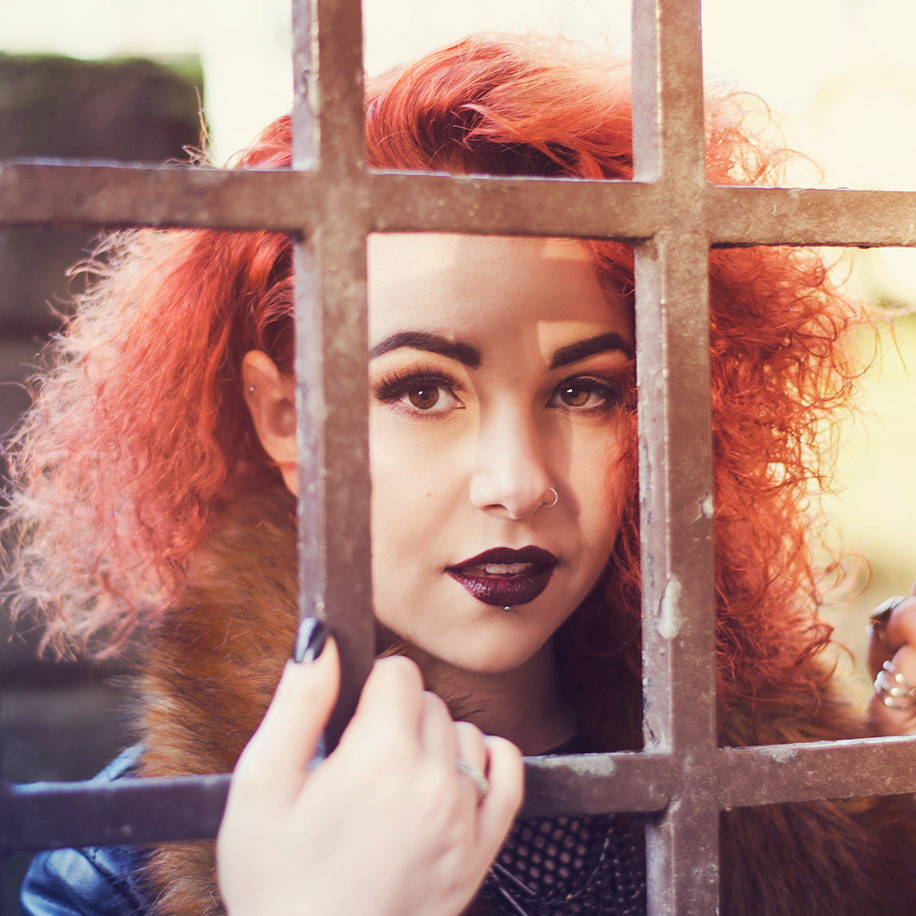
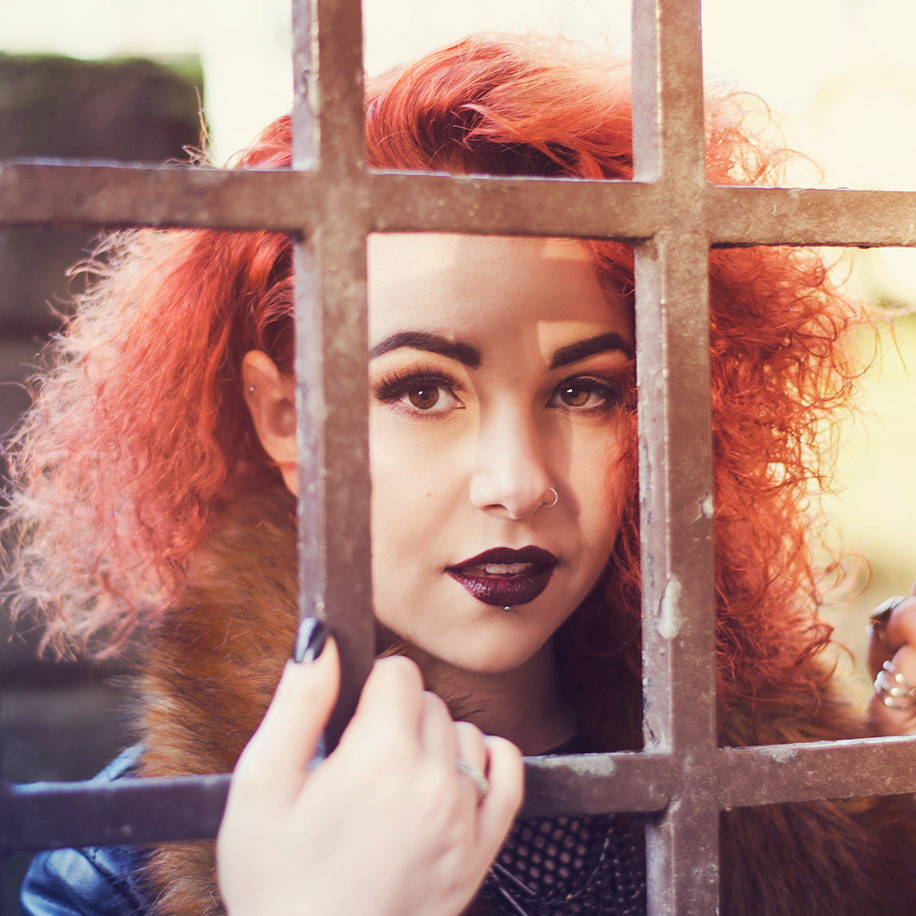

Showcasing talent, capturing emotion and conveying passion for an upcoming music artist.
Rosie Samaras is an acoustic music artist based in Liverpool, UK. Her songs have a strong focus on heartache/love and her latest EP ‘Messing With My Head’ has been released on both Apple Music and Spotify.
In January 2016, I worked with Rosie to create a concept that would be used to promote her brand in preparation for an upcoming album. The shoot took place in Newcastle Upon-Tyne and involved candid low-aperture photography, which focused on capturing passion and emotion.
My role
Concept Artist
Photographer
The team
Rosie Samaras/ Model
Laura Lou/ Make-up
 

 
